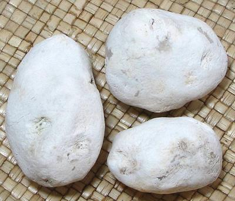
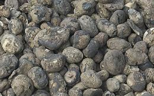

Chuño

[Chuño (Peru, Bolivia); Papas Secas (Spanish); Tunto
(white Chuño): Solanum tuberosum]
These freeze dried potatoes have been produced by the Inca and Tiwanaku
cultures for about 5000 years (that we know of). Frost resistant potato
varieties are frozen by night and thawed by day for several days, then
trampled under foot to squeeze out water and remove the skins. For a few
more days they are let to freeze by night and sun dry by day. White
chuño is washed between freezings and black chuño is not.
Chuño can be stored for more than a decade, and has been a survival
essential in the high Altiplano region. It remains important to traditional
recipes throughout Bolivia and Peru. Production is now threatened by global
warming, as the nights are no longer cold enough. This is very worrisome to
folks in the villages.
Chuño can be cooked and eaten whole, or broken up, and can also be
ground into flour for use as a thickener in soups.
More on Potatoes.

Black Chuño
These are made by the same method as
White Chuño, except the multiple washings are not done. The white is
more commercial, but the black is easier to make and usually eaten by the
farmers.
Photo by Eric in SF distributed under license Creative Commons
Attribution-ShareAlike v3.0 unported.
Buying
These potatoes are available in a few markets serving
a South American community, but can be easily purchased on-line. Typical
pricing is 2022 US $11.53 for 15 ounces, or $19.45 for three 15 ounce packs.
Storage:
These dried potatoes will last decades in a tightly
sealed container kept in a cool dry place.
Cooking:
First they should be soaked overnight. For soups
and stews, I usually break them up a bit with a blow from a kitchen mallet.
Then they need to be simmered in water for 10 minutes or so. After this,
they look more like potato, but have a slightly nutty taste and are a
little crisp in texture. Chuño is not considered interchangeable
with fresh potatoes in recipes, and some recipes include both.
ns_pot4cz 220524 - www.clovegarden.com
©Andrew Grygus - agryg@aaxnet.com - All photos not
otherwise credited are © cg1
- Linking to and non-commercial use of this page permitted